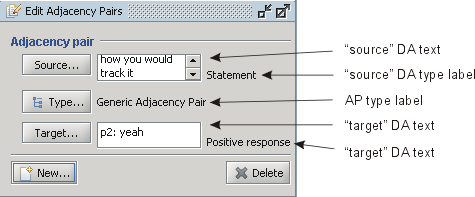

Figure 1: Adjacency pairs editor
The Adjacency Pairs Editor (Figure 1) displays the currently selected adjacency pairs (AP) element from the Adjacency Pairs Area or the new AP element that is being created.
The Source DA text field, located at the top of the editor, displays the content of the "source" dialogue act in the AP and information about speaker of the dialogue act. The "source" DA type label displays the type of the "source" dialogue act. The "source" dialogue act can be changed by pressing the Source button and selecting a new dialogue act in the Transcription Area.
The AP type label displays the type of the relation between the "source" and the "target" dialogue act. The AP type can be changed by pressing the Type button and selecting a new type from the list.
The Target DA text field displays the content of the "target" dialogue act and information about the speaker of the act. The "target" DA type label displays the type of the "target" dialogue act.
The "target" dialogue act can be
changed by pressing the Target button
and selecting new dialogue act in the Transcription Area.
Pressing the New button, a new AP
element is created. Pressing the Delete button, the selected AP element is deleted.